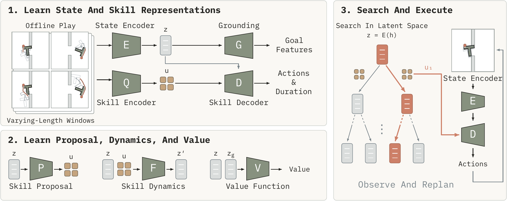
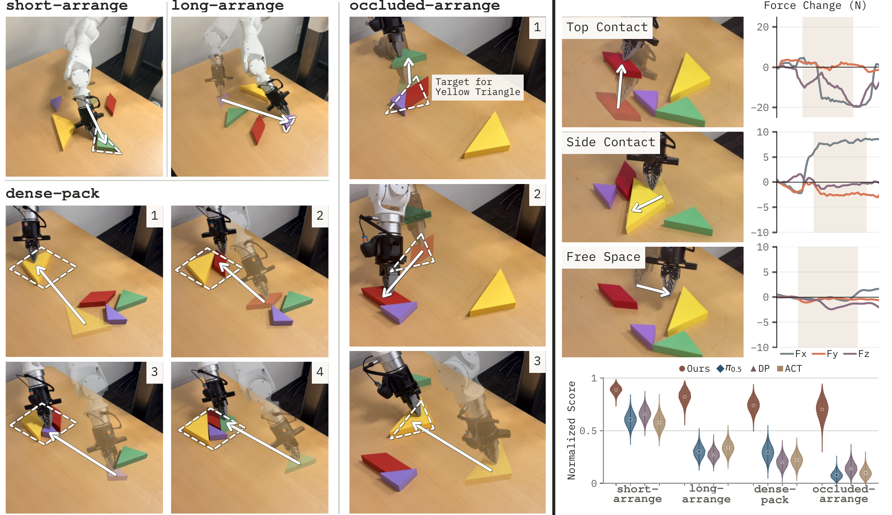
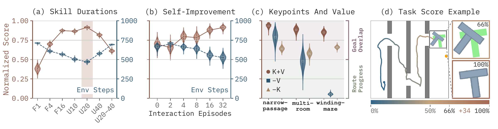
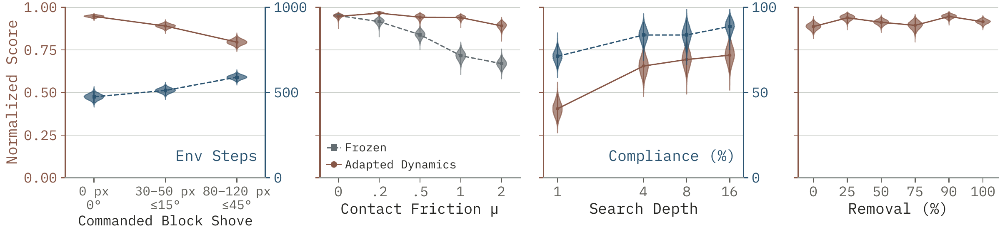

Unstructured interaction
Learn from local play without task-specific demonstrations or hand-labeled skill boundaries.
Anonymous research project
SkillReasoner
Learn local behaviors from play.
Compose them through physical reasoning to reach new goals.
A useful interaction need not be a complete solution. SkillReasoner learns temporal abstractions from unstructured play, then searches for ways to combine them at test time.
Contact-rich manipulation requires the robot to change contact, rotate objects, and navigate constrained spaces. Our method represents behavior as latent skills with varying horizons. Long skills support extended motion; short skills expose intermediate states for precise continuation. A learned dynamics model predicts their effects, enabling goal-directed search followed by execution and replanning from new observations.
Learn from local play without task-specific demonstrations or hand-labeled skill boundaries.
Compose behavior at the granularity needed for transport, contact changes, and final alignment.
Use imagined skill sequences to select the next behavior, then update the plan from observations.
The planner searches over temporally extended behaviors rather than individual motor commands. Step through one planning cycle below.
Scroll the diagram horizontally to inspect each stage.
Encode the latest observation–action history into a latent state. The goal specifies the desired object arrangement.
A long skill captures extended motion in one decision. A short skill exposes an intermediate state where the planner can change contact or refine alignment. Both are learned from windows of the same play data.

Inspect complete recorded executions in three simulation tasks. The slate T-block must reach the green target pose while navigating walls. The orange disk is the pusher.
Recorded execution
Rotate and transport the block through a tight opening, then align with the target.
The timeline marks actual skill boundaries. Segment width shows executed duration, not a hand-labeled behavior category.
Unstructured robot play includes top-contact sliding, side-contact pushing, and free-space motion. These clips show two recorded interactions from the play data, at their original speed.
The real-world evaluation tests local alignment, longer-range transport, dense packing, and occluded rearrangement. They require chains of interactions among the robot, objects, and workspace.

Varying horizons trade extended progress against precise adjustment. Uniform 1–20 gives the strongest balance among the duration laws tested in Narrow Passage.
Learned value guides route progress; object keypoints help resolve precise goal alignment. The ablations separate these roles.
Under changed contact friction, new experience can update the dynamics model. This self-improvement study adapts dynamics while keeping the proposal fixed.

Additional studies test unseen object displacements, changed friction, keep-out constraints introduced through planning, and removal of complete crossing examples while retaining local interactions.

Try guiding the pusher through the same layouts. Small changes in contact can change the block’s motion substantially. This is a human-controlled physics demo; the learned planner is shown in the recorded rollouts above.
About 27 MB on first load. Physics runs locally in your browser.